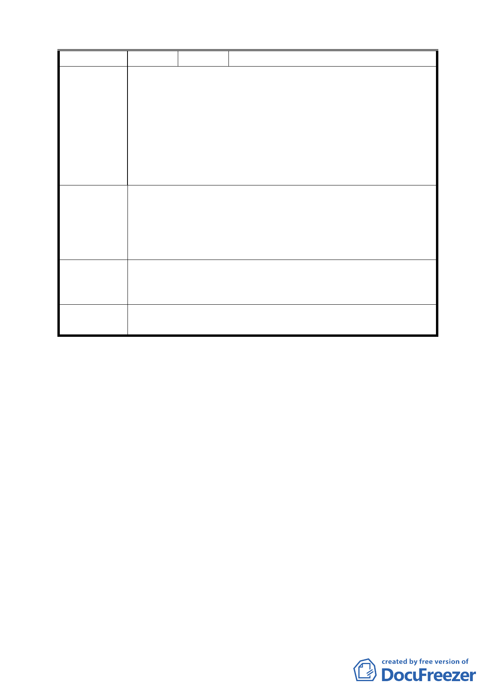

公處
一、本變更案係針對住六之六地區Ｆ滯洪池變更排水
路線，未事先詢問里民意見，過於草率。
二、本計畫下游為本里（公館里）第 5 鄰，如何整治
陳
情
理由
應有詳細規劃。
三、滯洪池應順山勢而下Ｆ滯洪池水量水勢如何保證
無事，Ｄ滯洪池是否也要從此導引而入。
四、此案未經評估，也違反雨水自然逕流，恐引發災
害。
一、請多與里民溝通。
二、市府公告前應先作詳細之規劃。
建 議 辦 法 三、請依山勢自然地形導引雨水自然排入山溝再予以
整治美化。
四、不贊成夲案。
專案小組
審查結論
同意以原有公展計畫路線按養工處修正計畫通過，並
請養工處爾後會同建設局協調取得民意支持，取得分
流猴峒溪的機會。
委員會議
決議
同意依專案小組審查結論辦理。
討論事項二
案名：變更臺北市信義區信義段三小段五三之三四地號人行步道
用地為道路用地計畫案
說明：
一、本案係市府以九十三年十一月十日府都規字第 09321526000
號函送到會，並自九十三年十一月十一日起公開展覽三十天。
二、法令依據：都市計畫法第二十七條第一項第四款。
三、申請單位：臺北市政府
四、計畫範圍：詳計畫圖所示。
五、變更理由及內容：詳計畫說明所示。
六、本案經提 94 年 1 月 27 日本會第 539 次委員會議審議，委員
會決議：「本案請都市發展局參考委員意見研擬可行方案及相
四